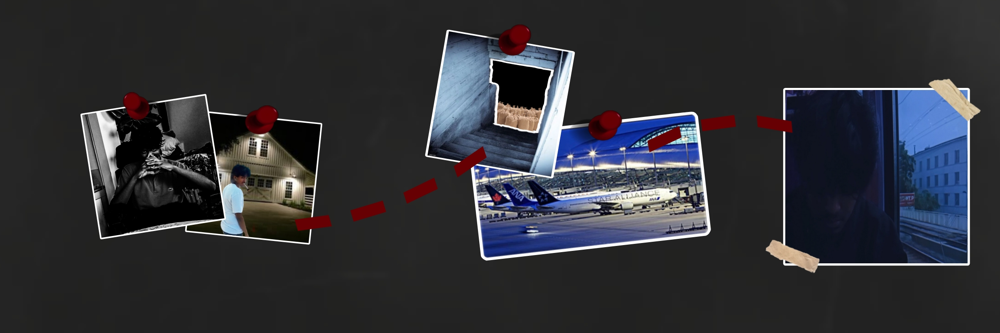

Ce qui suit est une retranscription des elements releves lors de la visite de l'appartement, le 29 juin. Certains points restent sans explication.

Une douzaine de verres se trouvaient encore sur la table basse et les etageres, chacun contenant un fond de liquide non termine, comme si tous les invites avaient interrompu leur consommation au meme moment. Les fenetres du salon etaient fermees et verrouillees de l'interieur au moyen de loquets a cremone, ce qui exclut a priori une entree ou une sortie par cette voie durant la soiree.
Le corps d'un homme non identifie a ete retrouve allonge pres de la baignoire. Les premieres constatations relevent une rigidite cadaverique compatible avec un deces survenu plusieurs heures avant la decouverte. Un morceau de papier hygienique etait serre dans sa main droite, portant une inscription tracee au sang, probablement le sien : les coordonnees "48.43886832931111, 2.030699606222631". Il semble avoir choisi de n'ecrire que cette seule information avant de perdre connaissance, ce qui laisse penser qu'il la considerait comme prioritaire sur tout le reste.
Sous la baignoire, un renfoncement rectangulaire a ete identifie dans le carrelage, aux dimensions correspondant precisement a celles d'une tablette electronique. L'espace etait vide au moment de la decouverte, mais son amenagement soigne suggere une installation prealable et deliberee, probablement mise en place par Nakul afin de surveiller son appartement, puisque la tablette affiche les differentes cameras de l'appartement, ce qui suggere que la victime en a fait usage pour tenter de survivre.
Le rapport d'autopsie conclut a un deces par arme a feu, survenu le 29 juin aux alentours de 6 heures du matin, soit sept heures apres le debut de la soiree selon les flyers dans la ville.
L'analyse des residus preleves dans les verres a revele la presence de cyanure de potassium (KCN), un compose hautement toxique, hydrosoluble, susceptible d'etre dilue dans une boisson sans alteration notable de son gout en faible concentration. Cette substance agit en inhibant la chaine respiratoire cellulaire, provoquant une hypoxie tissulaire generalisee dont les effets peuvent aller de la simple confusion a l'arret cardio-respiratoire selon la quantite ingeree.
Un appel a ete passe aux services de police durant la soiree. Un delai d'intervention de dix minutes avait ete annonce au moment de l'appel. Les forces de l'ordre ne se sont toutefois presentees sur les lieux que huit heures plus tard, un ecart qui n'a pour l'instant recu aucune explication satisfaisante de la part de la hierarchie concernee.
L'ensemble de ces elements pris ensemble laisse penser que les invites presents ce soir-la n'ont pas quitte l'appartement de leur plein gre, et que les coordonnees inscrites au sang designent probablement l'endroit ou ils ont ete conduits par la suite.